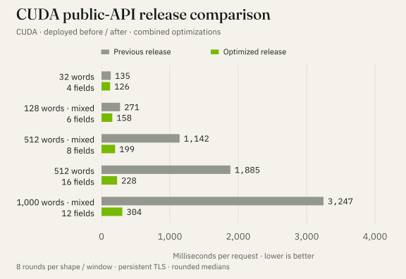
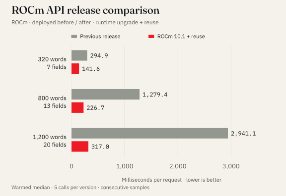
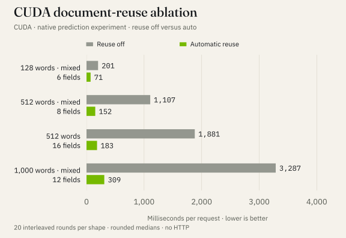
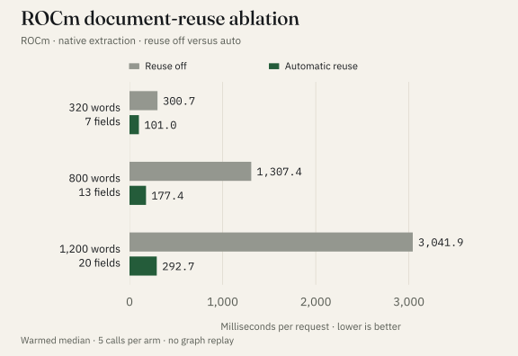
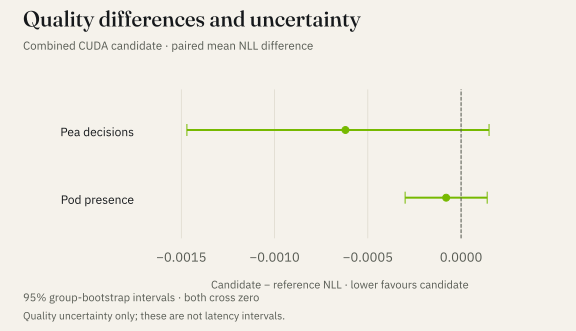
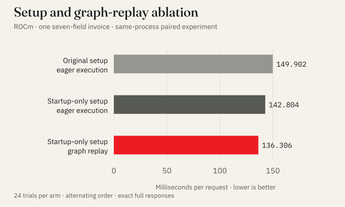

Engineering
Read once, ask independently: faster inference in Vej
Faster document extraction deployed on CUDA and ROCm, with public-API measurements, independent field assessments, and the quality checks behind the gains.

An invoice contains a supplier name, an invoice number, a date and a total. Extracting those four fields sounds like one task. Inside a model, it can become four separate passes over the same document.
Add line items, payment terms and delivery details, and the repeated work grows. The model processes much of the same text again for each question.
That was the largest opportunity we found while improving inference in Vej. The combined CUDA changes are now deployed. Through the public API, a sixteen-field extraction fell from 1,885 to 228 milliseconds. A longer, mixed-field example fell from 3,247 to 304 ms, about 10.7× faster. These are medians on authored test inputs, measured before and after the release.
The benefit depends on the request. A short, single-field example moved only from 129 to 125 ms. A long document with many fields offers more repeated work to remove. Understanding that work helped us choose which optimizations to ship.
First, what Vej does
Vej uses two related models for structured questions about text. Pea handles decisions: your application supplies the possible outcomes and receives a probability for each. Pod handles extraction, using named fields such as an invoice number or a total. They share a base model.
Pod, served as pea-pod-1, identifies evidence in the original document. It estimates whether a field is present and points to the relevant text; ordinary code then parses that text into the requested type. It can select the wrong evidence or miss a field. Its output still needs evaluation against the task.
For example, a request might look like this:
Document
Invoice INV-2291
Date: 22 October 2026
Currency: EUR
Total due: €1,080.00
Fields to extract
invoice_number · date · currency · total
This is an illustrative input, not a measured model result. The important feature is the shared document: each field asks a different question about the same text.
Pea uses direct prediction heads—small components that produce its scores and evidence positions—rather than writing an answer one token at a time. Our optimization work therefore focused on processing the input, running the model and reading its results.
Process the document once, keep the questions separate
The original extraction path paired the complete document with each field’s instructions. That made field isolation straightforward, but repeatedly processed the document.
The new path processes the shared document portion, or prefix, once. It keeps the resulting internal state for the duration of that request. Each field then starts from its own copy and evaluates its own instructions.
That separate copy is essential. Evaluating the invoice date must not alter the starting state used to evaluate the total. We reuse the document computation while preserving the boundary between field questions. Nothing from the document is cached for a later request.
Animate the document-to-field path (motion disabled)
Conceptual data flow, not a timing trace. Branches show isolation, not simultaneous execution. Close this panel to stop the animation.
Reuse also has a cost: building and copying the saved state takes time. For a short document, that overhead can exceed the work saved. We use a threshold based on document length and field count to decide when to take the reuse path.
The negative results helped set that policy. Forcing reuse on a short, four-field ROCm example made it slower: 65 to 98 ms. The automatic policy skipped reuse there. It is still a heuristic: one short CUDA example with sixteen fields would benefit from reuse but falls below the current threshold.
What changed in the measurements
We tested two GPU software stacks: CUDA, used with NVIDIA GPUs, and ROCm, used with AMD GPUs. We compared each implementation with its own reference on the same stack. These figures are not a performance ranking between CUDA and ROCm.
The final CUDA comparison measures the released system through the public API, including the request path and response readout. We ran the same eleven synthetic request shapes in separate before/after windows, with eight round-robin repetitions per shape and a persistent TLS connection. The longest examples improved most: the 512-word, sixteen-field request fell from 1,885 to 228 ms; the 1,000-word, twelve-field request fell from 3,247 to 304 ms.

The deployed release combines document reuse, adapter precision, kernels, batching and setup changes. The gains above belong to that bundle. Earlier controlled experiments isolated document reuse inside the prediction process; their results and the broader 1,497-document check are retained in the technical notes. The API probe timed responses but did not save their field values, so output quality comes from the separate checks below.
The ROCm deployment measurements answered a different question: did the improvement remain visible through the local API? A twenty-field, 1,200-word example fell from 2.94 seconds to 317 milliseconds, about 9.3×. This release combined document reuse with a ROCm/PyTorch runtime update, so that gain belongs to the combined release. Each value is the median of five warmed calls.

The seven-, thirteen- and twenty-field deployment examples retained their extracted answers. Probabilities changed, and the larger validation checks found changed values too. Speed and output quality needed separate checks.
Smaller changes needed their own experiments
Removing repeated document work had the largest effect on long extraction requests. Short requests exposed other costs.
Choose the right GPU operations. A kernel is a small program the GPU executes. We tested specialized kernels for operations previously handled by more general implementations. A specialized GPU kernel reduced the long CUDA examples by roughly 7–10%, while short examples saw essentially no gain. We verified that the specialized kernel actually ran.
Match batching to input length. A batch processes several rows together. Increasing Pea’s candidate batch from four to eight helped a short eight-option decision: 89 became 74 ms. On a longer input, the same change hurt: 778 became 879 ms. The released implementation therefore uses the larger batch only for short rows.
Check numerical precision explicitly. Pea’s adapters are small sets of learned adjustments attached to the shared base model. The extraction adapters used 32-bit arithmetic, even though the backbone used BF16, a 16-bit number format called bfloat16. Testing BF16 adapters reduced computation time, but changed numerical outputs. It required a labelled quality check; matching the model weights alone would not establish matching results.
Remove setup work from each request. Repeating model-mode setup and tokenizing the same decision rows twice cost a few milliseconds. Removing that repetition reduced a short CUDA decision example from 36.8 to 32.7 ms. That is useful on a small request, but it cannot explain a tenfold improvement on a long extraction.
We also tested graph replay. The CPU normally submits many operations to the GPU; a captured graph lets it submit a prepared sequence again with less repeated launch work. Graph replay helps only when a request matches the captured execution shape. The CUDA release leaves it off until shape coverage is understood. The diagram below explains the mechanism; its animation is not a timing measurement.
Animate eager launches and graph replay (motion disabled)
Conceptual submission pattern; animation speed does not represent latency. GPU computation remains. Close this panel to stop the animation.
These changes target different costs. Their individual speedups cannot simply be multiplied to predict the final result.
Faster results still need to be useful
Changing computation order, kernels or precision can move a probability or shift the edge of an evidence span. A stable overall accuracy score can hide changes to individual answers.
Before release, we checked the combined CUDA implementation on 1,016 decisions and 9,682 extraction fields, using the existing calibration check data. For extraction, the score for identifying whether a field was present remained about 95.77%. Exact value match among fields known to be present moved from 69.22% to 69.14%. Across all 9,682 fields, 140 returned values changed—about 1.45%—and four presence-probability decisions crossed the default threshold. These quantities have different denominators; a changed value is not automatically an additional error.
We also checked probability quality. Calibration asks whether probabilities agree with observed frequencies on evaluated data. A separate loss metric measures how much probability the model assigns to the labelled outcomes. Its measured changes were small, and the uncertainty intervals included zero. That does not prove that the implementations are equivalent or that accuracy improved. The existing calibration was retained for the tested data mixture; confidence in an evidence span remains a separate, uncalibrated score.
The detailed metrics, definitions and uncertainty calculation are in the optional notes below. Those notes also explain how repeated use of validation data limits the conclusions.
The first request is a different problem
Some GPU programs are compiled and tuned when an execution shape is first encountered. That makes a fresh process behave differently from one that has already handled similar requests.
In the ROCm study, a first short Pea request took 43.7 seconds; its repeat took about 70 ms. Running synthetic requests before the service reported ready moved much of that cost into startup. After a 72-second warm-up, the first short request took about 637 ms, followed by about 70 ms on its repeat. Startup became longer, and some first-request overhead remained.
The deployed CUDA release now warms up extraction before reporting ready as well. In one fresh-process sequence per version, the slowest first-use probe fell from 8,789 to 756 ms. This was the 512-word, sixteen-field request, reached after earlier shapes in the sequence; it is not a distribution across independent restarts. Both warm-up and the faster inference path contribute to that drop. Readiness costs more: Pea warm-up took 47 seconds with an empty compile cache, followed by 63 extraction warm-up calls in 10.6 seconds. Some first-use overhead remained.
Network setup also changes the number a user sees. In a corrected client probe, short extraction measured about 210 ms with a fresh HTTPS connection and 119 ms with connection reuse. That difference came from the request path, not a new model optimization. We keep those observations separate from the CUDA prediction-path measurements.
What this means for applications
Long documents with many requested fields offer the clearest opportunity for prefix reuse. Short inputs benefit from careful setup, batching and kernel choices. First-use requests need deliberate warm-up. Each improvement depends on the work the request actually asks the system to do.
There is a queueing implication too. Pea’s decision and extraction paths share model admission. In the public-API probe, a short decision issued while a sixteen-field extraction looped on another connection fell from a median 1,624 to 121 ms. The same decision alone, in its own ten-call run, was 114 ms before and 110 ms after. We recorded twenty loaded requests per version: the observed 90th-percentile sample fell from 1,805 to 156 ms. This is a small two-stream interference test, rather than a service-wide tail-latency or capacity estimate.
The results reported here come from 21–22 October 2026, including the completed CUDA deployment and public-API comparison. Both CUDA and ROCm changes are deployed. Their measurements use different workloads and request paths, so the absolute numbers should be read within each comparison.
The next test is how these changes behave across representative customer inputs and sustained mixed traffic. The deployed comparisons show that removing repeated document work can deliver substantial request-level gains. The output changes still need evaluation on the workloads that matter to each application.
Measurements and technical notes
The main results and chart data are available below without access to Vej’s code or weights. The CSV contains chart and table summaries plus the reported first-use observations. Individual eight-round timing rows and private validation inputs are excluded. It supports checking the figures and arithmetic; reproducing the underlying experiments requires the original implementation and evaluation inputs.
Download the aggregate measurements (CSV)
How the experiments were run
How the reuse policy counts work
For F fields, a document prefix of P tokens and field suffixes of lengths Sᵢ, the reference evaluates approximately F·P + ΣSᵢ token positions. Reuse reduces that to P + ΣSᵢ, ignoring padding. This counts avoided work; model execution, copying and batching prevent converting the count directly into a latency prediction. Automatic reuse uses a heuristic based on document length and field count; selected reuse bypasses graph replay.
The studies were conducted on 21–22 October 2026. Each comparison holds its execution environment fixed unless explicitly identified as a combined release comparison. CUDA and ROCm use different workloads, token budgets and runtime versions; their absolute latencies are not a controlled comparison between backends.
CUDA synthetic fixtures repeat authored word patterns or invoice fragments. Word counts are whitespace-delimited words, not tokenizer tokens; “mixed” denotes heterogeneous field types. These are controlled shape probes rather than sampled customer documents.
CUDA experiments used PyTorch 2.14.0+cu130, Transformers 5.17 and PEFT 0.21. The reference used a BF16 backbone, FP32 Pod adapters and FP32 native heads. ROCm’s isolated reuse experiment used PyTorch 2.14.0+rocm10.1.0, BF16 backbone execution and FP32 adapters/heads, with graphs disabled. The earlier ROCm graph experiment used the previous runtime and reference kernels.
| Study | Design and sampling | Quantity measured |
|---|---|---|
| CUDA reuse ablation | Two warm-ups per shape/arm; twenty rounds, arm order shuffled within each round | Native predict wall time, including response readout; excludes HTTP/TLS/gateway |
| Other CUDA ablations | Convolution: 25 rounds; candidate batch size: 30; CPU cleanup and graphs: 40; adapter precision/reuse: 20 | Same native timing boundary, with interleaved arms |
| CUDA deployed release | Eight round-robin repetitions per shape in each separate before/after window | Public-API wall time over persistent verified TLS to the production origin |
| ROCm isolated reuse | Five warmed calls per arm and synthetic shape; same runtime | Extraction wall time without HTTP or graph replay |
| ROCm deployed release | Five warmed local-API calls per version/shape; consecutive before/after windows | Combined ROCm-stack upgrade and reuse, including API overhead |
| ROCm setup/graph ablation | Twenty-four trials per arm; alternating order; device completion synchronized | Paired backend comparison, separate from deployment windows |
The CUDA benchmark ran in a separate process loaded like serving. Each ablation’s rounds came from one process, not independent restarts. Synthetic shape order stayed fixed; arm order within a shape/round was shuffled with seed 20261022. Serving counters recorded no production inference requests during those experiments. The timed call includes fixture construction, validation, native prediction and host readout; arm selection, model loading and readiness work are outside it. Ordinary calls were not bracketed by explicit device synchronization: returned predictions read their required outputs to the host. Profiler-instrumented calls were kept separate from the ablation timing results. CUDA work is asynchronous, so the interval outside recorded kernels cannot automatically be assigned to Python overhead.
We report arm medians and, where available, the median of within-round speedup ratios. These are different estimators:
arm-median ratio = median(reference) / median(candidate)
paired speedup = median(reference_round / candidate_round)
For the earlier controlled CUDA 512-word, sixteen-field case, the reported paired estimator is 10.23×; the ratio of the unrounded arm medians is approximately 10.30×. Dividing the displayed, whole-millisecond medians gives approximately 10.28× because of rounding. The retained latency aggregates do not contain the original timing pairs, so no new latency confidence intervals or significance tests are constructed here. Five-call ROCm medians are descriptive engineering measurements.
Completed CUDA deployment
The optimized release was deployed on 22 October 2026. The client made a verified TLS connection directly to the production origin, retained that connection, and timed request submission through full response readout. A health request established the connection before the timed calls. Response JSON decoding and the between-call instrumentation were outside the timer. This includes API and network work along that path, but excludes a new TLS handshake on each request. The eight-round windows ran before and after deployment; versions were not alternated within a round. Shapes cycled in a fixed round-robin order. Calls returning rate-limit responses were retried; the successful attempt was timed.
| Request | Before (ms) | After (ms) | Speedup |
|---|---|---|---|
| Decision, 32 words, 2 options | 135 | 112 | 1.20× |
| Decision, 32 words, 8 options | 162 | 136 | 1.19× |
| Decision, 512 words, 8 options | 816 | 711 | 1.15× |
| Extraction, 32 words, 1 field | 129 | 125 | 1.03× |
| Extraction, 32 words, 4 fields | 135 | 126 | 1.07× |
| Extraction, 32 words, 16 fields | 207 | 178 | 1.16× |
| Mixed extraction, 128 words, 6 fields | 271 | 158 | 1.71× |
| Extraction, 512 words, 4 fields | 468 | 176 | 2.66× |
| Mixed extraction, 512 words, 8 fields | 1,142 | 199 | 5.73× |
| Extraction, 512 words, 16 fields | 1,885 | 228 | 8.29× |
| Mixed extraction, 1,000 words, 12 fields | 3,247 | 304 | 10.69× |
These speedups are ratios of the unrounded arm medians, rounded for reporting. They differ from the paired estimator used in the earlier controlled reuse study. The raw records contain eight accepted observations per shape/window, whose counts and medians were independently recomputed for this update. Before/after windows can also differ in process age, network or background conditions; this deployment comparison does not isolate each component’s causal contribution.
The separate first-use measurements cover one pass through eleven shapes after a fresh process, followed by a single additional round and another interference probe. The latter measurements are not pooled with the eight-round deployment comparison. Earlier shapes can warm code used by later ones. These first-use observations are therefore not eleven independent cold starts, and the maximum of that sequence does not establish a worst-case guarantee. The earlier controlled empty-cache experiment reached about 2.4 seconds with an extended warm-up; the deployed 756 ms observation uses a different, combined configuration and timing boundary.
The interference probe used ten standalone short decisions and twenty short decisions with one looping long extraction on a second connection, per version. The reported p90 selects sorted observation index round(0.9 × (n − 1)), using zero-based indexing. For twenty calls that is index 17. Calls in the sequence can be dependent; this is descriptive interference evidence, not an independent-sample significance test or a public-service percentile estimate.
Earlier controlled CUDA reuse experiment
The isolated sixteen-field case fell from 1,880.8 to 182.6 ms, with a reported paired speedup of 10.23×. On the 1,000-word, twelve-field case, the stored output signature changed; its speedup does not establish exact outputs. Across 1,497 accepted validation documents, processing duration fell from 326.9 to 133.6 seconds (about 2.45×), including harness output. Three of 1,500 requested documents were skipped under the row limits in every arm. These are development checks, not population throughput estimates.

Same-runtime ROCm check
On the isolated ROCm reuse comparison, the 1,200-word, twenty-field request fell from 3,041.9 to 292.7 ms. Across 300 validation documents, total processing time fell from 67.5 to 37.8 seconds. This comparison holds the runtime fixed and excludes graphs; the main article’s local-API release comparison combines reuse with a runtime update.

Quality metrics, uncertainty and additional results
We distinguish three questions: whether an optimization changes numerical outputs, whether task metrics change on labelled data, and whether the resulting probabilities retain acceptable calibration diagnostics. An exact-response check addresses the first question only for its tested cases. An unchanged aggregate score does not establish identical field outputs or stable customer thresholds.
The ROCm reuse check used 300 validation documents and 1,729 fields. Value exact match was 79.76% with reuse off and with automatic reuse, but three presence statuses, twenty-four values and thirty spans differed. List F1 moved from 0.4504 to 0.4499. This was validation reuse, not an untouched final test.
CUDA checks reused the frozen calibration roles: 1,016 Pea decisions across 333 source groups, held out from temperature fitting, and Pod’s separate check role containing 9,682 measured fields across 1,275 groups. Of those Pod fields, 6,183 were gold-present and form the value-exact-match denominator. The group counts and gold-present denominator were independently recounted from the frozen evaluation input.
Pea retained its previously fitted temperature. Pod retained its previously fitted presence calibrator; span confidence remained uncalibrated. The Pod calibration protocol separated fitting and checking by document group. Repeated optimization against these checks makes them development evidence, even though their original fit/check separation is retained.
The combined CUDA implementation produced these pre-release quality-check results:
| Metric | Reference | Combined candidate |
|---|---|---|
| Pea NLL | 0.44132 | 0.44071 |
| Pea top-1 accuracy | 81.693% | 81.890% |
| Pea ECE, 15 bins | 0.03952 | 0.03658 |
| Pod presence NLL | 0.11834 | 0.11826 |
| Pod presence Brier score | 0.03222 | 0.03217 |
| Pod presence ECE, 15 bins | 0.00806 | 0.00853 |
| Pod presence accuracy at 0.5 | 95.765% | 95.765% |
| Pod value exact match, gold-present fields | 69.222% | 69.141% |
NLL is the mean negative natural logarithm of the probability assigned to the labelled outcome; lower is better. Pod presence uses binary NLL. The Brier score is mean squared probability error. ECE uses fifteen equal-width bins: Pea compares top confidence with correctness, while Pod compares presence probability with the binary presence label. Neither diagnostic calibrates evidence-span correctness. Value exact match uses gold-present fields as its denominator; presence accuracy includes both present and absent fields. These metrics answer different questions and should not be substituted for one another.

The quality analysis computes paired per-observation NLL differences, resamples source groups with replacement 1,000 times using seed 20261022 and takes the 2.5th and 97.5th percentiles. Observations within a sampled group are retained together; the statistic remains an observation-weighted mean. This avoids treating related fields as independent bootstrap units. The intervals apply to NLL; uncertainty intervals for ECE and value exact match were not reported.
The point estimates favour the candidate for NLL, but both intervals cross zero. This is insufficient evidence to claim improved NLL, equivalence, or formal non-inferiority. The engineering checks supported retaining the existing calibration artifacts on the tested mixture. Pea’s earlier 0.01 NLL/ECE tolerance was a verification criterion, not a universal Pod acceptance margin. ECE increased slightly for Pod, and value exact match decreased by 0.081 percentage points.
Two Pea top answers changed. Across all 9,682 Pod fields, 140 values and 194 spans changed, with four presence-threshold flips. The changed-value fraction is approximately 1.45% of all fields; this differs from the gold-present denominator used for exact-match accuracy. The original Pod presence fit itself also traded improved aggregate probability scores for lower present recall and did not improve every field-type or source slice. Custom null thresholds therefore need their own recheck. Across ROCm process restarts, numerical drift was observed even on the reference path; retaining the autotune cache did not remove it. Same-process graph exactness does not establish cross-restart or cross-backend bit identity.
In the combined pre-release quality checks, total processing time was 237 → 209 seconds for Pea and 327 → 121 seconds for Pod. These give approximately 1.13× and 2.70× by ratios of totals.
Additional dispatch and decoder measurements
The earlier ROCm paired experiment separated setup cleanup from graph replay: 149.902 ms with original eager setup, 142.804 ms with startup-only setup, and 136.306 ms with startup-only setup plus graphs. The graph-only reduction was about 4.55%; the combined reduction was 9.07%. Twenty-four trials per arm alternated order, synchronized device completion and required exact full responses. These measurements preceded the later kernel and runtime updates.

A banded span decoder reduced scalar-span decoding from 1.834 to 0.669 ms on six rows of 2,048 tokens, with ten warmed samples per arm. Additional peak allocated memory fell from 40.03 to 3.77 MiB. Complete API measurements did not establish a corresponding latency improvement: sequential p50 was nearly unchanged and mixed-request p50 increased. This is a component result.

Written by